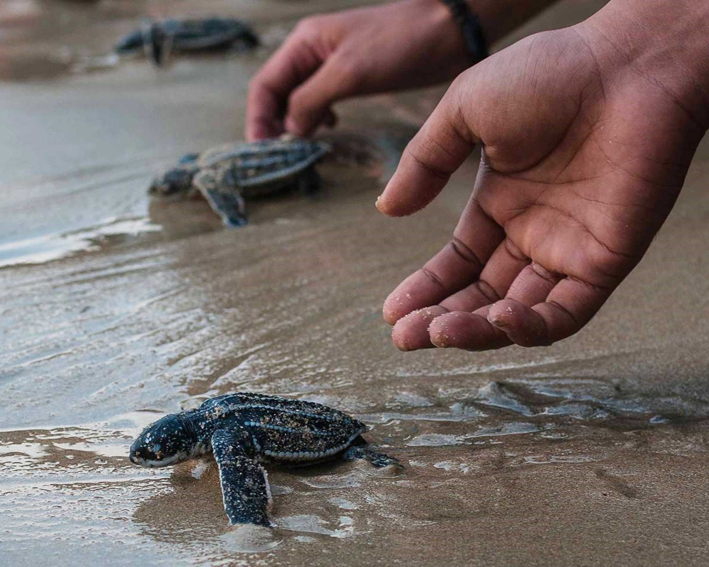
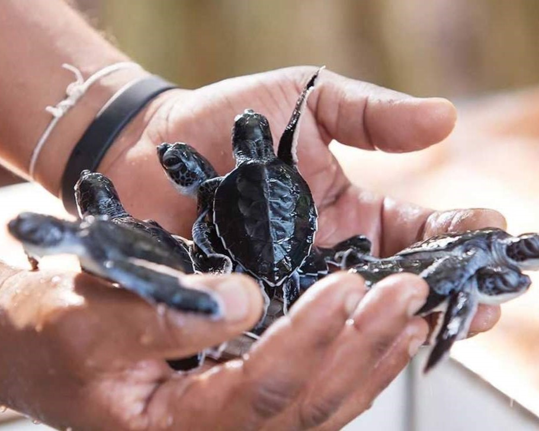
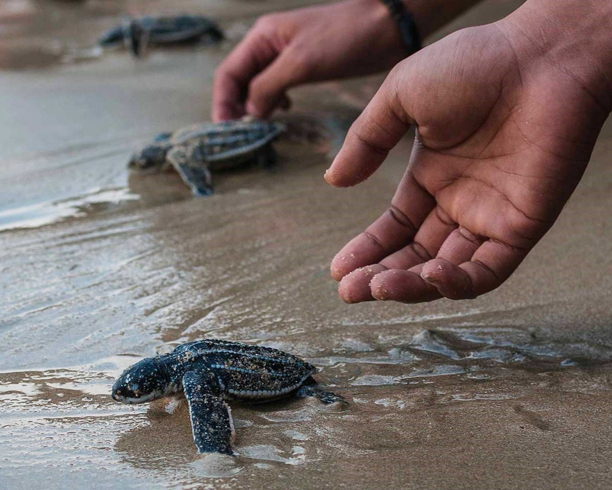
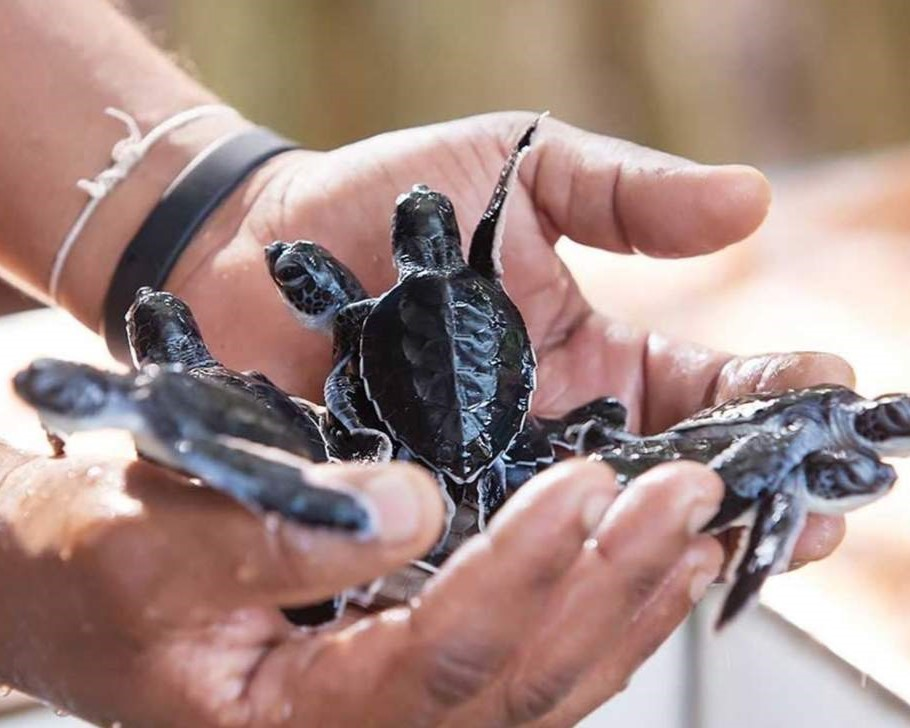

Welcome to Turtle Hatcheries in Sri Lanka
Experience the beauty of Sri Lanka's sea turtles and learn about their conservation efforts at our hatcheries.
About Our Hatcheries
We are committed to protecting the sea turtles that call Sri Lanka their home. Our hatcheries focus on conservation efforts, including protecting turtle eggs and rehabilitating injured or sick turtles. We also offer educational tours and programs to raise awareness about the importance of turtle conservation.
Types of Sea Turtles in Sri Lanka
Sri Lanka is home to five species of sea turtles. Each species has its own unique characteristics and habits.
- Leatherback Turtles
- Olive Ridley Turtles
- Hawksbill Turtles
- Green Turtles
- Loggerhead Turtles

Conservation Efforts
Turtle hatcheries in Sri Lanka are working to protect the sea turtle population by raising awareness and educating the public about the importance of conservation. They also work to rescue and rehabilitate injured turtles.

Visit a Hatchery
If you're interested in learning more about sea turtles and their conservation, consider visiting a hatchery in Sri Lanka. You can see the hatchlings up close and even help release them into the ocean.
Gallery
 


